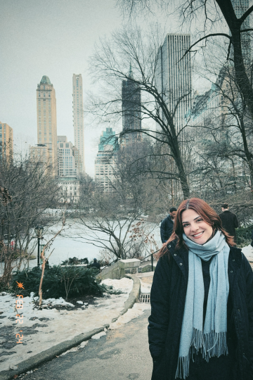

About

Hi! I am Amanda Wazbinski, current UX/UI student. I enjoy conducting user research tests to gather insights and understand user needs. My favorite design techniques include card sorting and empathy mapping.